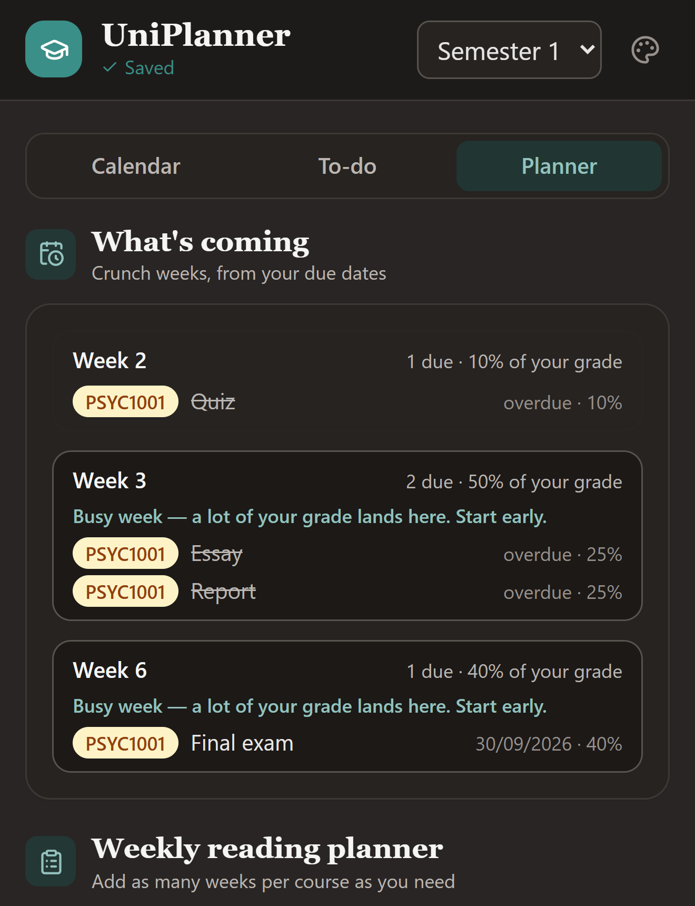
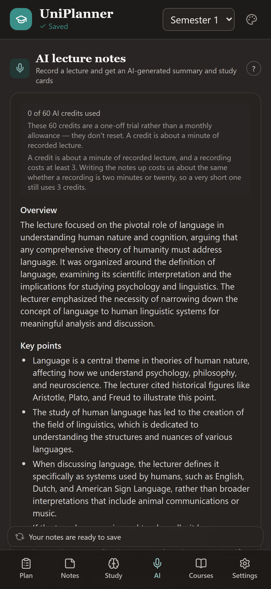
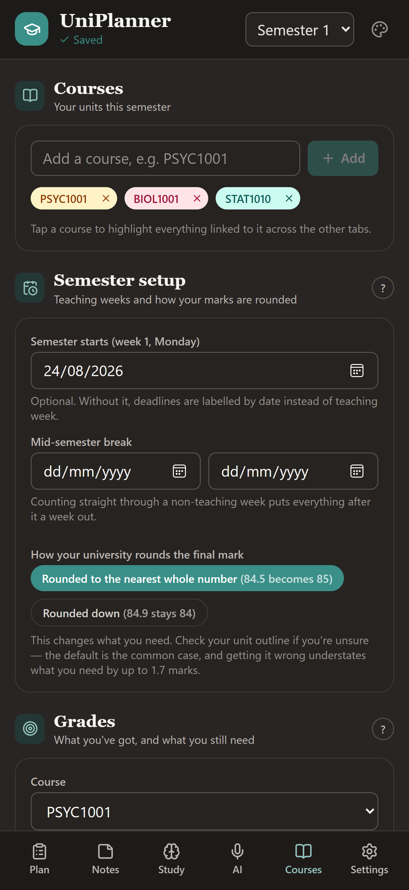
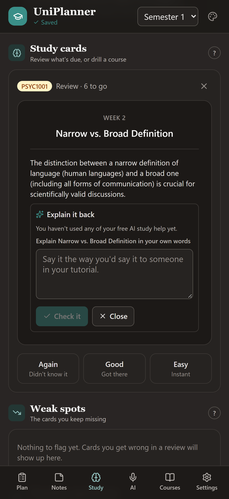
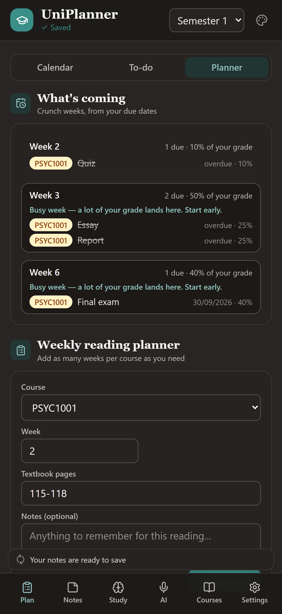

Record a lecture and get structured notes and study cards. Track what you need on the final in real HD/D/C/P bands. Plan every deadline by teaching week instead of by date.
Free to use. No ads, ever. Your data stays in Australia.

Your lectures written up by course, your marks worked out, and every deadline placed in the week it's due.
AI lecture notes
Hit record at the start of a lecture and get back an overview, the key points, anything flagged as assessable, and study cards made from the terms that matter.

Grades
Enter each assessment and its weight, add marks as they come back, and the app answers the only question that matters in week 12.

Study
Study cards on a spaced schedule. Cards you know drift out to weeks, cards you miss come back in the same session, so your revision time goes where it is actually needed.

Planner
Set your semester dates once and every deadline in the app knows it is due in Week 9, skipping the mid-semester break the way your unit outline does.

Three taps in a lecture theatre, and the write-up is done before you have packed your bag.
Close-by or room mode depending on where you are sitting. Then put your phone down and actually listen.
The audio is transcribed and written up, then deleted. It is never stored, and it never trains anything.
Tick the terms worth remembering and save. The note files itself into that course's folder.
Type on your laptop, read on your phone. Everything stays in step.
Lecture theatre basements included. Notes you have opened stay readable offline.
Track what is set each week per course, and tick it off as you go.
Days left, plus a plan spreading your topics across the time you have actually got.
Box up a finished semester and start fresh. Grades and lectures stay readable.
Use it without signing up and everything stays on your device. Nothing is sent anywhere.
The planner is free and always will be. AI study help costs money to run, so that is the part that is paid.
Stored in Sydney. Not sold, not shared, and not used to train anything.
There are no advertisements in UniPlanner and no third-party trackers in the app.
One tap in the app removes your account and every piece of data with it.
Free to download. The same app on every device, signed in or not.